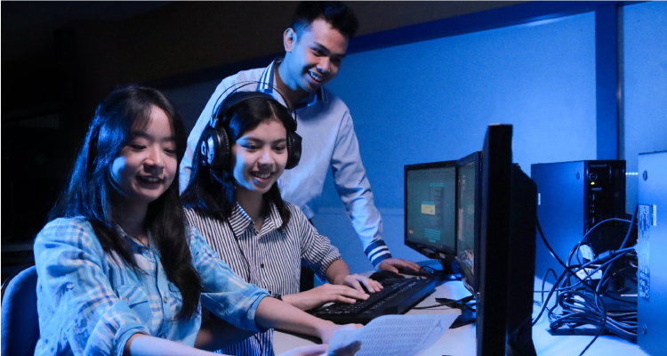

Homepage / Program Studi/ Program Sarjana Teknik Informatika
Mahasiswa Program Sarjana Teknik Informatika akan memepelajari konsep ilmu komputer science serta implementasi praktis software engineering. Keahlian utama tersebut ditunjang dengan keahlian-keahlian khusus yang didapat diambil sesuai bidang peminatan, yaitu:
Fokus utama perkuliahan adalah dalam keahlian pengembangan software(software methods and technologies). Proses pembelajaran seimbang antara konseptual dan praktik di laboratorium, menyiapkan mahasiswa agar siap berkarya secara maksimal di dunia kerja/usaha setelah menyelesaikan kuliah. Lulusan akan memiliki keahlian pengembangan aplikasi mobile/deskop application, berbasis intelligent computing&network security
Lulusan Program Sarjana Teknik Informatika sudah banyak yang berhasil enajadi wirausahawan, maupun bekerja di berbagai perusahaan di tingkat nasional,multinasional, bahkan skala internasional. Masa tunggu lulusan untuk memperoleh pekerjaan atau menjadi wirausahawan juga terhitung relatif singkat. Lulusan program ini dapat berkarier dalam berbagai bidang/sebagai: